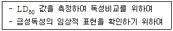
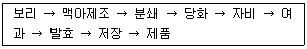

식품산업기사(구) (2003-08-10 기출문제)
1과목: 식품위생학
1. 식품 제조 공정 중 거품이 많이 날때 소포의 목적으로 사용하는 첨가물은?
- 규소수지
- n - 핵산
- 규조토
- 유동파라핀
(정답률: 알수없음)

2. 열경화성 수지에 해당되는 플라스틱 수지는?
- 폴리에틸렌(polyethylene)
- 폴리프로필렌(polypropylene)
- 폴리아미드(polyamide)
- 요소(urea) 수지
(정답률: 알수없음)
3. 다음 식중독균 중 내열성이 강한 포자를 형성하는 것은?
- 장염비브리오균
- 포도상구균
- 보툴리누스균
- 병원성대장균
(정답률: 알수없음)
4. 식물성 식품에서 유래하는 유독성분이 아닌 것은?
- 베네루핀(venerupin)
- 무스카린(muscarine)
- 아미그달린(amygdalin)
- 고시폴(gossypol)
(정답률: 알수없음)
5. 신경독(neurotoxin)을 생산하는 균은?
- 황색포도상구균
- 웰치균
- 보툴리누스균
- 장염비브리오균
(정답률: 알수없음)
6. 독미나리의 독성분은?
- 셉신(sepsin)
- 아미그달린(amygdalin)
- 시큐톡신(cicutoxin)
- 무스카린(muscarine)
(정답률: 알수없음)
7. 대합 조개의 중독 성분은?
- 삭시톡신(saxitoxin)
- 베네루핀(venerupin)
- 테트로도톡신(tetrodotoxin)
- 에르고톡신(ergotoxin)
(정답률: 알수없음)
8. 다음과 같은 목적으로 하는 독성 시험은?

- 아급성독성시험
- 급성독성시험
- 만성독성시험
- 유전독성시험
(정답률: 알수없음)
9. 식품 위생 검사시 채취한 검체의 취급상 주의사항을 설명한 것 중 잘못된 것은?
- 저온 유지를 위해 얼음을 사용시 얼음이 검체에 직접 닿게 하여 저온유지 효과를 높인다.
- 검체명, 채취장소 및 일시 등과 시험에 필요한 참고 사항 등을 기재한다.
- 필요한 경우 운반용 포장을 하여 파손 및 오염 되지 않게 한다.
- 미생물학적 검사를 위한 검체는 반드시 무균적으로 채취한다.
(정답률: 알수없음)
10. 다음 물질 중 소독 효과가 거의 없는 것은?
- 알콜
- 석탄산
- 크레졸
- 중성세제
(정답률: 알수없음)
11. 민물고기를 섭취한 일이 없는데도 간흡충에 감염되었다면 이와 가장 관계가 깊은 경우는?
- 채소 생식으로 인한 감염
- 생 가재즙 섭취로 인한 감염
- 왜우렁이 생식으로 인한 감염
- 민물고기를 요리한 도마를 통한 감염
(정답률: 알수없음)
12. 화학적 합성품을 식품첨가물로 사용하고자 적부심사를 할때 가장 중점을 두는 것은?
- 효능
- 순도
- 영양가
- 안전성
(정답률: 알수없음)
13. 통조림용 공관제조에 쓰이는 금속으로 상당기간 저장하면 식품 중에 용출되어 문제를 일으키는 것은?
- Fe
- Al
- Sn
- Pb
(정답률: 알수없음)
14. 미나마타(minamata)병의 원인이 되는 금속류는?
- 카드뮴(Cd)
- 수은(Hg)
- 납(Pb)
- 아연(Zn)
(정답률: 알수없음)
15. 회충알을 사멸시킬 수 있는 능력이 가장 강한 것은?
- 중성세제
- 저온
- 건조
- 가열
(정답률: 알수없음)
16. DL-α -tocopherol은 다음 중 어디에 해당하는가
- 보존료
- 착색료
- 발색제
- 산화방지제
(정답률: 알수없음)
17. 식품 중의 디메틸아민(dimethylamine)과 반응하여 발암성이 강한 니트로사민(nitrosamine)을 만드는 물질은?
- 인산염
- 암모늄염
- 아질산염
- 칼슘염
(정답률: 알수없음)
18. 우유의 가열살균이 잘 되었는지를 판단하는 검사방법은?
- lactose test
- galactose test
- peroxidase test
- phosphatase test
(정답률: 알수없음)
19. COD 에 관한 설명 중 맞지 않는 것은?
- COD란 화학적 산소요구량을 말한다.
- BOD가 적으면 COD도 적다.
- COD는 BOD에 비해 단시간내에 측정 가능하다.
- 유기물을 화학적으로 산화시킬 때 소모되는 산소량을 말한다.
(정답률: 알수없음)
20. 식품위생 검사시 생균수를 측정하는데 사용되는 배지는?
- 표준 한천 평판배지
- 젖당 부이온 발효관
- BGLB 발효관
- SS한천 배지
(정답률: 알수없음)
2과목: 식품화학
21. 유화제(emulsifying agent)의 설명 중 틀린 것은?
- 구조내 친수기와 소수기가 있다.
- 천연유화제 중에는 복합지질들이 대부분이다.
- 유화액의 형태에 영향을 준다.
- 식품공업상 이용되는 유화제들은 모두 합성품이다.
(정답률: 알수없음)
22. 펠링(Fehling)시약을 환원시키지 않는 당은?
- 설탕(sucrose)
- 포도당(glucose)
- 갈락토오스(galactose)
- 과당(fructose)
(정답률: 알수없음)
23. 나이 든 여성들의 경우, 골다공증에 걸리기 쉬운데 이를 예방하기 위해서는 어떤 무기질을 섭취하여야 하는가?
- 염소
- 칼슘
- 철
- 나트륨
(정답률: 알수없음)
24. 유지의 검화가(saponification value)에 대한 설명 중 틀린 것은?
- 유지 1g중에 함유된 유리 지방산을 중화하는데 필요한 KOH의 mg수이다.
- 유지 1g을 알칼리에 의해 분해하는데 필요한 KOH의 mg수이다.
- 저급지방산의 함량이 많을수록 검화가는 커진다.
- 보통 유지의 검화가는 180-200 정도이다.
(정답률: 알수없음)
25. 갈변(Browning)의 방지에 사용될 수 있는 것은?
- 비타민 B1
- 비타민 B2
- 비타민 C
- 비타민 D
(정답률: 알수없음)
26. 다음 식품 중 노화가 가장 늦게 일어나는 것은?
- 고구마
- 밀가루
- 감자
- 찰옥수수
(정답률: 알수없음)
27. 포도당에서 과당을 제조할 때 쓰이는 효소는?
- pectinase
- maltase
- glucose oxidase
- glucose isomerase
(정답률: 알수없음)
28. 생고기를 숯불로 구울 때 생성될 수 있는 유해성분은?
- 니트로사민
- 다환방향족탄화수소
- 아플라톡신
- 테트로도톡신
(정답률: 알수없음)
29. 유중수적형(W/O:water in oil) 교질상 식품은?
- 우유
- 마요네즈
- 아이스크림
- 버터
(정답률: 알수없음)
30. 클로로필(Chlorophyll) 색소의 구성 성분이 되는 무기 물은?
- 마그네슘(Mg)
- 구리(Cu)
- 철(Fe)
- 아연(Zn)
(정답률: 알수없음)
31. 짠맛 성분이 아닌 물질은?
- KCl
- MgSO4
- NH4Cl
- NaBr
(정답률: 알수없음)
32. 사람의 미각기관에서 가장 예민하게 느껴지는 맛은?
- 단맛
- 신맛
- 짠맛
- 쓴맛
(정답률: 알수없음)
33. 단백질을 SDS(sodium dodecyl sulfate) 젤 전기영동을 할때 단백질의 이동거리에 가장 크게 영향을 주는 것은?
- 단백질의 용해도
- 단백질의 유화성
- 단백질의 분자량
- 단백질의 구조
(정답률: 알수없음)
34. 동물성 식품의 간, 근육 등에 저장되는 다당류는?
- 글리코겐(glycogen)
- 포도당(glucose)
- 갈락토오스(galactose)
- 갈락탄(galactan)
(정답률: 알수없음)
35. 된장국의 경우와 같이 분산질이 고체이고 분산매가 액체인 콜로이드 상태를 무엇이라 하는가?
- 거품
- 유화액
- 졸(sol)
- 젤(gel)
(정답률: 알수없음)
36. β - 전분인 생전분에 물을 가해 가열함으로서 α - 전분으로 되는 현상을 무엇이라 하는가?
- 호화
- 가수분해
- 산화
- 산패
(정답률: 알수없음)
37. 유지의 산패를 촉진하지 않는 것은?
- 산소
- 광선
- 금속 이온
- 토코페롤
(정답률: 알수없음)
38. 전분질 식품을 볶거나 구울 때 일어나는 현상은?
- 호화현상
- 호정화현상
- 노화현상
- 유화현상
(정답률: 알수없음)
39. 다음 지방산 중 식용유를 구성하는 주요 지방산이 아닌것은?
- 올레산(oleic acid)
- 부티르산(butyric acid)
- 팔미트산(palmitic acid)
- 리놀레산(linoleic acid)
(정답률: 알수없음)
40. 비타민 A 의 산화를 방지할 수 있는 것은?
- 비타민 B
- 비타민 D
- 비타민 E
- 비타민 K
(정답률: 알수없음)
3과목: 식품가공학
41. 경도가 높은 곡물을 도정하는데 가장 효과적인 도정 작용은?
- 마찰작용
- 충격작용
- 연삭작용
- 찰리작용
(정답률: 알수없음)
42. 감압건조에서 공기 대신 불활성 기체를 사용할 때 가장 효과가 큰 것은?
- 산화 방지
- 비용의 감소
- 건조시간의 단축
- case hardening 방지
(정답률: 알수없음)
43. 높은 CO2 농도로 환경기체를 조절하여 빵을 포장하면 곰팡이에 의한 변패없이 오래 저장할 수 있는 방법으로 PVDC(polyvinylidene chloride)로 코팅된 PP(polypropylene) 필름을 사용하는 가스치환 포장법은?
- 블리스터(blister) 포장
- 스킨(skin) 포장
- 스트레치(stretch) 포장
- 폼/필/실(form/fill/seal)
(정답률: 알수없음)
44. CA저장(controlled atmospheric storage)법을 가장 많이 이용하는 식품은?
- 생선
- 육류
- 우유
- 과실
(정답률: 알수없음)
45. 감귤 통조림 제조에서 섬유소와 펙틴을 박피하기 위해 처리하는 약제로 가장 적당한 것은?
- HCl과 NaOH
- H2SO4와 CaCO3
- KCl과 H2SO4
- NaOH와 K2CO3
(정답률: 알수없음)
46. 버터(butter) 제조과정의 설명 중에서 옳지 않게 설명한 것은?
- 교동(churning) 작업은 크림의 지방구들이 뭉쳐서 버터의 작은 입자를 형성하고 , 버터밀크(butter milk)와 분리되도록 하기 위하여 교동기에서 50분간 20∼45rpm 속도로 기계적인 충격을 주는 작업이다.
- 수세(washing) 과정은 버터입자에 부착해 있는 버터 밀크의 제거와 경도 증가, 특이취 제거, 보존성 향상을 위하여 버터의 전체에 물을 뿌리고 교동기를 몇번 회전시킨 다음 배수한다.
- 연압(working)이란 버터조직이 부드럽게 되도록 연압기를 이용하는데, 연압은 시간이 길수록 더욱 부드러운 조직을 얻을 수가 있다.
- 버터 제품의 평균조성은 지방 80% 이상, 수분 16%내외, 무기질 2%, 식염 1.5% 정도이고 나머지는 단백질을 주체로 하는 성분으로 되어있다.
(정답률: 알수없음)
47. 치즈(cheese) 제조시 렌넷(rennet)을 이용하는 목적으로 가장 알맞은 것은?
- 지방의 산화 방지
- 유단백질의 균질
- 유단백질 응고
- 유지방 환원
(정답률: 알수없음)
48. 식용유지의 정제과정에서 활성백토, 활성탄 등 흡착제를 가하는 공정은?
- 탈산
- 탈취
- 탈색
- 탈검
(정답률: 알수없음)
49. 밀가루 품질 규정시 밀기울의 혼합율은 어느 성분으로 측정하는가?
- 지방
- 섬유질
- 회분
- 비타민
(정답률: 알수없음)
50. 빵 제조법에서 직접 반죽법의 장점이 아닌 것은?
- 짧은 시간에 발효가 끝난다.
- 효모가 절약되고 조직이 좋은 빵을 얻는다.
- 발효 중의 감량이 적어진다.
- 제품의 향기가 좋아진다.
(정답률: 알수없음)
51. 아미노산 간장에 대한 설명으로 가장 알맞은 것은?
- 화학간장에 발효간장을 혼합한 것
- 간장 제조시 대두를 많이 첨가한 것
- 재래식 간장에 아미노산을 첨가한 것
- 대두를 염산 등 산으로 분해한 후 소금, 착색제 등을 첨가한 것
(정답률: 알수없음)
52. 병류식과 비교할 때 향류식 터널건조기의 특징이 바르게 된 것은?
- 수분함량이 낮은 제품을 얻기 어렵다.
- 식품의 건조초기에 고온 저습의 공기와 접하게 된다.
- 과열될 염려가 없어 제품의 열손상을 적게 받고 건조속도도 빠르다.
- 열의 이용도가 높고 경제적이다.
(정답률: 알수없음)
53. 두부의 종류에 대하여 올바르게 설명한 것은?
- 전두부 - 10배 정도의 물을 사용하며 응고제를 넣고 단백질을 엉기게 한 다음 탈수 · 성형하여 만든다.
- 자루두부 - 보통두부와 동일한 제조공정을 거치며 자루에 넣어서 만든다.
- 인스턴트 두부 - 소비자가 보는 앞에서 직접 만들어서 바로 먹을 수 있다.
- 유바 - 진한 두유를 가열하면 얇은 막이 형성되는데, 계속 가열하여 두꺼워진 막을 걷어 내어 건조한 것이다.
(정답률: 알수없음)
54. 다음 중 도정도가 가장 큰 것은?
- 현미(玄米)
- 배아미(胚芽米)
- 주조미(酒造米)
- 정백미(精白米)
(정답률: 알수없음)
55. 마요네즈(mayonnaise)의 제조방법의 설명 중 틀린 것은?
- 난황을 분리하여 원료로 사용한다.
- 난황과 난백을 분리하여 일정비율로 혼합하여 식초와 식용유를 넣어서 만든다.
- 난황을 분리하여 식초와 혼합하고 식용유와 나머지 식초를 넣으면서 유화, 균질화한다.
- 마요네즈의 배합비는 대체적으로 난황 10%, 조미료3.5%, 향신료 1.5%, 식초 10%, 식용유 75% 정도이다.
(정답률: 알수없음)
56. 유지 채유과정에서 열처리를 하는 근본적인 이유가 아닌것은?
- 유지의 점도증가
- 원료의 수분조절
- 산화효소의 불활성화
- 착유 후 미생물의 오염방지
(정답률: 알수없음)
57. 김치의 보존성을 연장하는 기술이 아닌 것은?
- 냉장유통
- 향신료 첨가
- 살균밀봉
- 보존료 첨가
(정답률: 알수없음)
58. 과실건조 중 유황처리의 목적이 아닌 것은?
- 갈변효소 파괴
- 부패 및 충해방지
- 과육색소의 탈색 및 흑변방지
- 비타민 손실방지
(정답률: 알수없음)
59. 우유에 유방염치료에 쓰이는 항생물질이 섞여있으면 어떤 물질의 성장이 억제되는가?
- 젖산균
- 산막균
- 호기성균
- 병원균
(정답률: 알수없음)
60. 일반적으로 정상육의 사후 강직 중 최종 pH는?
- 약 1.5
- 약 3.5
- 약 5.5
- 약 8.5
(정답률: 알수없음)
4과목: 식품미생물학
61. 미생물을 염색하여 현미경으로 관찰할 때 조작 순서로 맞는 것은?
- 건조 → 염색 → 수세 → 건조 → 고정 → 도말 → 검경
- 도말 → 고정 → 건조 → 수세 → 염색 → 건조 → 검경
- 도말 → 건조 → 염색 → 고정 → 수세 → 건조 → 검경
- 도말 → 건조 → 고정 → 염색 → 수세 → 건조 → 검경
(정답률: 알수없음)
62. 구연산을 발효한 후 균체를 분리한 액에 무엇을 가해야 구연산을 분리할 수 있는가?
- Na2CO3
- CaCO3
- K2CO3
- MgSO4
(정답률: 알수없음)
63. 대용혈장 물질인 덱스트란(dextran)을 생성하는 세균은?
- Leuconstoc mesenteroides
- Lactobacillus casei
- Clostridium botulinum
- Bacillus natto
(정답률: 알수없음)
64. 세균 세포벽의 역할이 아닌 것은?
- 세포 내부의 높은 삼투압으로부터 세포를 보호한다.
- 세포 고유의 형태를 유지하게 한다.
- 전자전달계가 있어서 산화적 인산화반응을 일으킬 수 있다.
- 세포벽 성분에 의해 세균독성이 나타나기도 한다.
(정답률: 알수없음)
65. 주정 제조 원료 중 당화공정이 생략되는 것은?
- 고구마
- 옥수수
- 당밀
- 쌀겨와 밀기울
(정답률: 알수없음)
66. 곰팡이에 대한 설명으로 잘못된 것은?
- 균사체와 자실체를 이룬다.
- 단세포로서 하등미생물에 속한다.
- 생육에 광선을 필요로 하지 않는다.
- 포자로서 증식한다.
(정답률: 알수없음)
67. Aspergillus oryzae 의 특징이 아닌 것은?
- 단백질 분해력이 강해 장유류 양조용으로도 사용된다.
- 전분 당화력이 강해 주류 양조용으로도 사용된다.
- 아플라톡신(aflatoxin)을 생성한다.
- 분생자의 색깔이 황록색이다.
(정답률: 알수없음)
68. 빵효모 발효시 발효 1시간 후(t1=1)의 효모량이 102 g, 발효 11시간 후(t2=11)의 효모량이 103 g 이라면, 지수계수 M(exponential modulus)은?
- 0.1303
- 0.2303
- 0.3101
- 0.4101
(정답률: 알수없음)
69. 맥주 제조공정 중 호프(hop)를 첨가하는 공정은?

- 분쇄
- 당화
- 자비
- 여과
(정답률: 알수없음)
70. 쌀밥에서 쉰내를 내거나 식빵이 끈적끈적 해지며 상한 냄새를 내는 점질화현상(ropiness현상)을 일으키는 미생물은?
- Bacillus 속
- Clostridium 속
- Rhizopus 속
- Aspergillus 속
(정답률: 알수없음)
71. 버섯의 유성생식에 의한 포자는?
- 담자포자
- 포자낭포자
- 접합포자
- 분생포자
(정답률: 알수없음)
72. 미생물의 증식도를 측정하는 방법으로 적당하지 않은 것은?
- 건조 균체량 측정
- 비탁법
- 최확수법(MPN법)
- 균체 조지방 함량 측정
(정답률: 알수없음)
73. 박테리오파아지(Bacteriophage)에 대하여 잘못 설명된 것은?
- 증식성이 있다.
- 병원성이 있다.
- 유전성이 있다.
- 독자적 대사기능이 있다.
(정답률: 알수없음)
74. 맥주 제조용 양조 용수의 경도(hardness)를 저하시키는 방법으로 부적당한 것은?
- 염소첨가
- 가열
- 석회수 첨가
- 이온교환수지 사용
(정답률: 알수없음)
75. Pichia 속과 Hansenula 속의 차이점으로 옳은 것은?
- Hansenula 속은 질산염을 자화하지 않는다.
- Pichia 속은 질산염을 자화한다.
- Hansenula 속은 질산염을 자화한다.
- Hansenula, Pichia 속 모두가 질산염을 자화하지 못한다.
(정답률: 알수없음)
76. 세균의 포자에 대한 설명 중 잘못된 것은?
- 비교적 열에 강하다.
- 운동기관이다.
- Clostridium 속은 아포를 갖는다.
- 비교적 건열에 더 강하다.
(정답률: 알수없음)
77. 고정화 효소 제법 중 담체 결합법이 아닌 것은?
- 가교법
- 이온결합법
- 물리적 흡착법
- 공유결합법
(정답률: 알수없음)
78. Corynebacterium glutamicum 에 비오틴(biotin)을 과량 넣어 발효하였더니 균체 및 젖산이 많이 생산되었다. 이 배지를 사용하여 glutamic acid를 생산할 때 첨가하는 것은?
- 포도당
- 페니실린
- 염산
- 이스트 추출물
(정답률: 알수없음)
79. 효모에 대한 설명이 아닌 것은?
- 효모는 진핵세포이다.
- 효모의 주된 증식법은 출아법이다.
- 효모 중 유성포자만을 형성하는 효모를 무포자효모라고 한다.
- 효모의 분류 중 가장 많은 수를 차지하는 것이 자낭포자효모이다.
(정답률: 알수없음)
80. 포도주의 주발효균은?
- Saccharomyces ellipsoideus
- Saccharomyces sake
- Saccharomyces sojae
- Saccharomyces coreanus
(정답률: 알수없음)